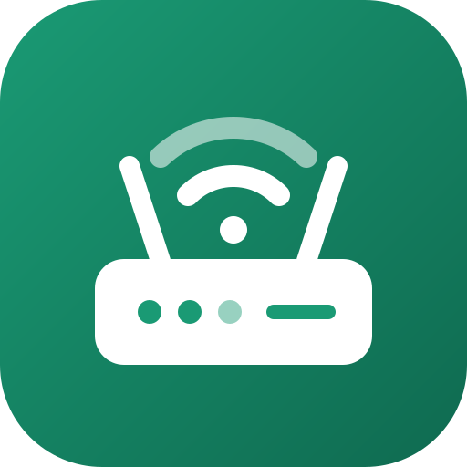

DMK ACSSimulação Carregando…Como vai ficar na internet: usuário + senha + app autenticador, com bloqueio de tentativas e de IP.
O que o cliente recebe para trocar nome e senha do Wi-Fi. Abra no celular e "Adicionar à tela inicial".
No sistema: o provedor com o módulo ACS ativo vê "ACS · Roteadores". Desativado, ele não entra.